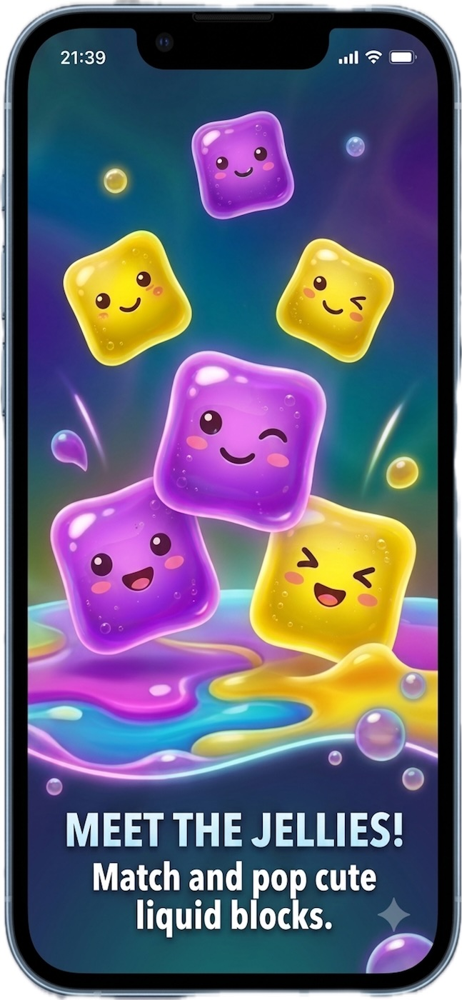
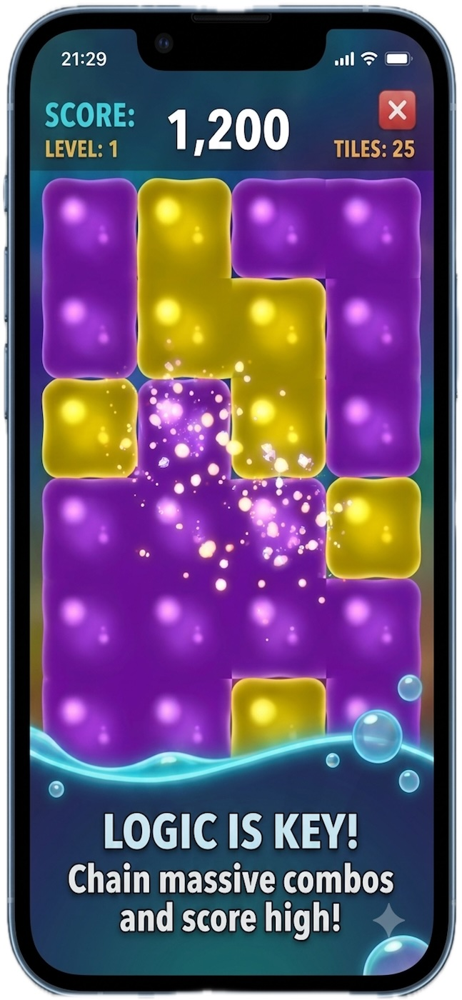
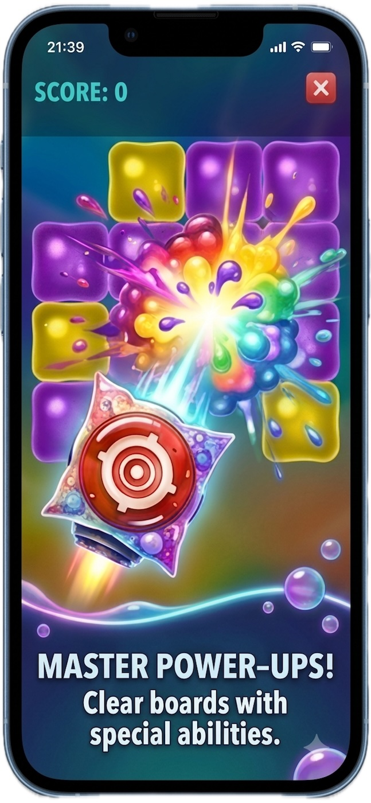
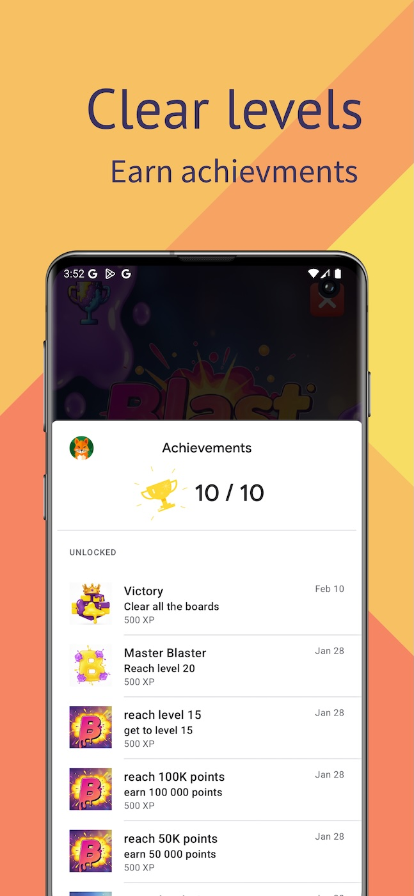

1. The Enduring Appeal: SameGame vs. Match-3
Tile-matching games have stood as cornerstones of casual gaming since the dawn of digital computing. However, modern mobile gaming has become saturated with cookie-cutter Match-3 mechanics—games where success is largely dictated by lucky random cascades falling from outside the screen.
In contrast, SameGame-style tile-popping puzzles—brought to life with satisfying fluid dynamics in Blast: Liquid Logic—present a transparent, deterministic mental challenge. You are confronted with a full grid of colorful slime blocks. No secret tiles are held in reserve; the physics are completely predictable:
- Vertical Gravity: When a contiguous cluster of 2 or more identical liquid blocks is tapped, they pop with a juicy splash. Every tile positioned above immediately drops downward into the vacated spaces.
- Horizontal Column Consolidation: When all blocks in an entire vertical column are eliminated, the columns on either side slide together toward the center, fusing previously separated color territories.
This turns every round of Blast into a spatial chess match: every single pop alters the geometric trajectory of the remaining board.
The "SameGame" mechanic was originally created in 1985 by Eiji Fukumoto under the name Chain Shot! for personal computers. Its brilliant balance of simple rules and complex emergent strategy made it one of the most widely adapted puzzle concepts in computer history.
2. The Mathematics of High Scoring: The Exponential Cluster Rule
The most common pitfall for beginning players is hyperactive pairing. When you see two matching blocks, your natural reflex is to immediately tap them. While this keeps your fingers moving, it systematically destroys your score potential and guarantees dead-end boards.
In Blast: Liquid Logic, point rewards scale non-linearly (quadratically). The point yield of popping a cluster grows exponentially based on the number of connected blocks:
| Cluster Size (N) | Relative Score Output | Tactical Classification | Strategic Recommendation |
|---|---|---|---|
| 2 Blocks | Baseline Minimum | Emergency Move | Avoid unless intentionally dropping higher rows. |
| 5 Blocks | Moderate Yield | Utility Clear | Good for leveling off column heights. |
| 10 Blocks | High Multiplier | Strong Tactical Move | Solid point contributor; stabilizes the local board. |
| 18–25+ Blocks | Mega Exponential Bonus | Game-Defining Burst | The holy grail: generates 80%+ of your stage score. |
| 100% Clear | Stage Clear Sweep | Endgame Perfection | Maximum stage progression and perfection badge. |
Consider the math: popping ten separate 2-tile pairs yields negligible points. Consolidating those exact same twenty tiles into one unified 20-tile super-cluster yields exponentially higher points—often a 10x to 15x difference in overall stage score!
3. Anatomy of an "Orphan Block" & Board Physics
The ultimate obstacle to clearing levels in Blast is the dreaded Orphan Block: a solitary colored tile that has zero adjacent neighbors of the same color anywhere on its top, bottom, left, or right edges.
1. The Bottom-Row Trap: Tapping pairs resting along the floor of the grid causes all upper columns to plunge downward unevenly, tearing apart potential pairs in higher rows.
2. The Perimeter Blindspot: Leaving lonely blocks along the far-left or far-right walls where opportunities for adjacent connections are cut by 50%.
3. Asymmetric Column Clearing: Clearing a middle column when the flanking columns have uneven heights, dropping matching colors into step-stair misalignments.



4. The 5-Step Pro Playbook for Blast Liquid Logic
Here is the systematic methodology used by master puzzle solvers to consistently clear stages and shatter high-score leaderboards:
Step 1: The Pre-Move Inventory Audit
When a new level begins, resist the urge to tap instantly. Take 10 seconds to scan the grid and count color representation. If there are only 4 Green slime blocks on the entire board, you must immediately plan how those 4 blocks will touch. If you pop other tiles recklessly, those rare blocks will end up stranded forever.
Step 2: Top-Down Pruning
Always prioritize clearing awkward small clusters in the top third of the grid. Removing upper tiles causes zero disruption to the lower foundation, gradually lowering colors into proximity while keeping the main clusters intact.
Step 3: The Horizontal Column Squeeze
This is the most powerful technique in tile-collapse games. Imagine you have a cluster of 8 Blue blocks on Column 2 and 9 Blue blocks on Column 4, separated by a thin column of 3 Red blocks on Column 3.
By popping the 3 Red blocks and completely clearing Column 3, Column 2 and Column 4 slam together, instantly uniting all 17 Blue blocks into a massive, score-shattering cluster!
Step 4: The Strategic Color Sacrifice
Master players often pop an unappealing 2-block pair not for points, but as a surgical wedge. Dropping an overhead block by exactly one grid unit can align an entire horizontal strip of matching slime.
Step 5: Endgame Board Sweeping
When only 8 to 12 blocks remain, the puzzle transitions into pure endgame calculation. Trace the trajectory of every remaining block before committing your tap. If one stubborn orphan is inevitable, position it where your booster can remove it cleanly.
5. Power-Up Strategy: Surgical Use of the Target Booster
In Blast: Liquid Logic, power-ups like the Target Booster (Extra Shot) are your tactical trump cards. A Target Booster allows you to target and obliterate any single block on the grid, regardless of whether it has matching neighbors.

1. The Keystone Breaker: Use a booster on a single stubborn block wedged directly between two giant matching reservoirs. Shattering that one tile fuses dozens of blocks.
2. The 100% Perfect Stage Clear: If you have masterfully eliminated 98% of the board and only one single tile prevents a complete wipe, the Target Booster guarantees a perfect stage sweep bonus.
6. Comparison: Match-3 vs. Falling Blocks vs. Liquid Logic
How does Blast: Liquid Logic compare to the broader puzzle landscape? Here is an objective teardown:
| Attribute | Traditional Match-3 | Falling Block (Tetris-style) | Blast: Liquid Logic |
|---|---|---|---|
| Core Mechanic | Swap 2 adjacent gems | Rotate and place dropping shapes | Tap contiguous matching liquid clusters |
| Control & Determinism | Low (Heavy RNG cascades) | Medium (Piece queue RNG) | High (Full board calculable) |
| Pacing & Pressure | Move limits / artificial timers | Increasing descent speed | Thoughtful, stress-free contemplation |
| Aesthetic Feedback | Static sparkles / chime audio | Geometric flat blocks | Squishy liquid physics & slime pops |
| Offline Playability | Frequently requires server checks | Local only | 100% Offline • Zero Wi-Fi required |
7. Frequently Asked Questions
Match-3 games involve swapping adjacent tiles to form lines of three, with random new pieces dropping from the top. In Blast Liquid Logic, you tap clusters of 2 or more contiguous matching blocks on a fully visible grid. Physical gravity and horizontal column shifting are completely deterministic, rewarding calculation rather than random luck.
Blast uses a quadratic scoring formula where every additional block in a connected cluster increases the points-per-block exponentially. Consolidating 20 blocks into one giant explosion produces dramatically higher scores than popping ten small 2-block pairs.
Clear from the top down to preserve foundational structures beneath. Count low-frequency colors early, and use column-clearing collapses to merge disjointed color groups before they become isolated.
Yes. Blast: Liquid Logic is completely playable offline. It does not require continuous Wi-Fi or cellular data, making it ideal for flights, subways, and off-grid relaxation.
Blast is available on both Android (via Google Play Store under Blast Liquid Logic) and iOS (via Apple App Store under The Blast).
8. Start Popping: Download Blast on iOS & Android
Ready to put these strategies to the test? Dive into the juicy, brain-teasing world of Blast: Liquid Logic today and experience the pure satisfaction of mastering the board.